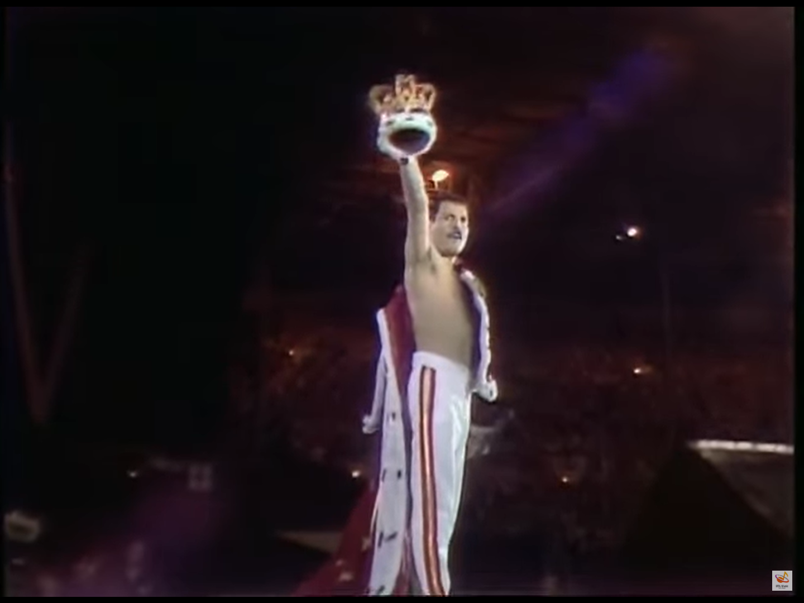
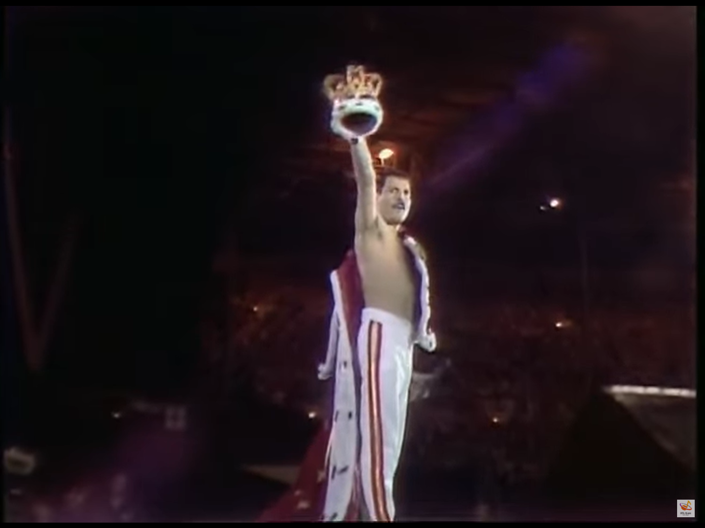

Brian Harold May
Brian Harold May è un chitarrista, musicista e astrofisico britannico nato a Twickenham il 19 luglio 1947, famoso sopratutto per essere il chitarrista della famosa band inglese Queen, di cui lui, insieme al cantante Freddie Mercury e al batterista Roger Taylor, è il fondatore.

dall'inizio della musica alla creazione della red special
Brian inizia a suonare a 5 anni, suonando il piano, ma la sua passione era la chitarra, con cui iniziò a prendere confidenza suonando l'ukulele portatosi in guerra da suo padre.
I genitori di Brian non avevano abbastanza soldi per aquistargli una Stratocaster o una Les paul, così, Brian decise di creare una sua chitarra, la Red Special.
nel 1963, all'età di 16 anni, iniziò i lavori con l'aiuto del padre ingegnere, utilizzando il legno di un'architrave e il mogano di un vecchio camino (da questo deriva il soprannome "Fireplace"). Brian dovette comprare solo le parti elettroniche, comprò dei pickup Burns tri-sonic e degli switch per i pickup.
Dopo 2 anni di lavoro, nel 1965. La chitarra era finita, e Brian la usa ancora oggi.
Dagli Smile ai Queen fino ai primi successi
Nel 1964, all'età di 20 anni, forma con il cantante/bassista Tim Staffel e il batterista Roger Taylor la band Smile. Tim Staffell presenta a May un compagno di studi chiamato Farrokh Bulsara (che cambierà il suo nome in Freddie Mercury). Intanto a causa di problemi interni, gli Smile si separano. Tim Staffell decide di ritirarsi e di suonare in altre band più motivate mentre Freddie, Brian e Roger fondano un nuovo gruppo, chiamato Queen. Nel 1971 dopo 1 anno di ricerca dell'ultimo componente si aggiunge a loro il bassista John Deacon.
Nel 1974 esce il loro primo album di successo: Sheer heart attack,con il loro primo successso:Killer Queen. 1 anno dopo, nel 1975, i Queen scrivono il loro 4 album: A night at the opera, e il loro più grande successo: Bohemian Rhapsody. In quella canzone, brian scrive quello che diventerà il suo assolo più famoso.
Dal Live Aid, all'ultimo tour nel 1986 alla morte di Freddie nel 1991
Il 13 luglio 1985 avviene quello che verrà ricordato nella storia come il più grande evento musicale e televisivo della storia: Il Live Aid. Un concerto di beneficenza per raccogliere soldi per una carestia in etiopia, veniva fatto in 2 stadi diversi, il John F. Kennedy Stadium di Filadelfia e il Wembley Stadium di Londra. con oltre 2 miliardi di spettatori da casa.
I Queen si esibirono circa alle 6 di sera, suonando bohemian rhapsody, radio gaga, hammer to fall, crazy little thing called love, we will rock you e we are the champions. La loro performance venne nominata da esperti e da fan come la migliore performance del live aid, e una delle più grandi della storia.
"I Queen sono Il più grande gruppo rock del pianeta" Bob Dylan
"quel giorno Freddie Mercury ha rubato la scena a tutti" Elton John.
Nel 1986, i Queen fanno il loro ultimo tour: Il magic tour del 1986.
un concerto nei più grandi stadi d'europa, purtoppo, l'italia non fece parte delle tappe.
i concerti più famosi del tour sono: Live a Budapest(rinominato Hungarian Rhapsody), il live a knebworth (l'ultimo concerto del Tour e dei Queen prima della morte di Freddie) e il live at Wembley del 12 luglio (probabilmente il concerto più famoso della storia dei Queen).
Il 23 novembre 1991, Freddie Mercury annuncia al mondo intero di avere l'aids, purtroppo morirà a notte tarda, il 24 novembre, per una Broncopolmonite. I Queen avevano saputo dell'aids solo 3 giorni prima di morire.
Questo fu un evento che colpi molto i Queen, lo stesso anno, Brian perde il padre.
Pochi mesi dopo, il 20 aprile 1992, i Queen fanno un concerto a Wembley, il Mercury tribute concert, con i più grandi cantanti del mondo (Elton John, David Bowie, George Michel, solo per citarne alcuni) tutti e 72 mila biglietti esaurirono in poche ore. il concerto venne seguito da oltre 1 miliardo di spettatori da casa, diventando uno dei più grandi concerti della storia. I soldi guadagnati vennero usati per fondare Il Mercury Phoenix Trust, una associazione per combattere l'aids in tutto il mondo.
 


La fondazione della Brian May Guitars nel 2006
La Brian May Signature Guitars (abbreviato BMG) è una casa produttrice di strumenti musicali britannica, fondata dal chitarrista Brian May.
Nel corso della sua carriera ha collaborato con liutai e case produttrici per replicare la sua chitarra a scopo di avviare una produzione in serie, dopo il successo avuto con la Guild, azienda statunitense e con la Burns, azienda inglese, nel 2006 ha collaborato con gli esperti Barry Moorhouse e con il suo tecnico di fiducia, Peter Malandrone: l'obbiettivo era creare uno strumento di alta qualità ad un prezzo accessibile, ed è allora che è nata l'attuale casa produttrice. Oltre che gli strumenti musicali, l'azienda fornisce anche oggetti per la pulizia dello strumento, o prodotti di abbigliamento.
Prodotti
- Bmg Special
Ovviamente ispirata all'originale, è una chitarra che risalta i precedenti modelli della Burns e che ha raggiunto lo status di icona di un posto unico nella storia del rock, ed è progettata in collaborazione con lo stesso Brian May.
Senza dubbio uno degli strumenti più attesi del secolo, La Special è stato originariamente lanciata nell'inverno del 2001, e ha influenzato il successo di critica e pubblico. La rivista Guitarist l'ha interpretata come "la chitarra migliore dell'anno". É disponibile nella colorazione originale (rosso ciliegio antico), ma esistono le versioni LE Series, con colorazioni diverse (verde, azzurro, nero, ecc.).

- Bmg Rhapsody
Questa è la versione acustica: il corpo ha la stessa sagoma e la tastiera ha sempre ventiquattro tasti. Amplificata da un sistema di equalizzazione Fishman Presys, è disponibile in due colorazioni: antique cherry e naturale.

- Bmg Bass
Basso elettrico di dimensioni leggermente ridotte rispetto ad un basso comune, prende sempre ispirazione dalla Red Special. Il corpo è in mogano compatto e il primo tasto è di 31.5mm, la tastiera è in ebano ed ha 20 tasti. Il circuito è costituito da un pickup humbucker controllato da una manopola del passivo, una del volume e una del tono. Il ponte è di tipo roller con manopoline di controllo e le meccaniche sono della Hipshot.

- Bmg Super
Collaborando con i liutai Greg Fryer e Kazutaka Ijuin, Brian May ha lanciato nel 2008 questa versione limitata dal costo di circa 3200€. Considerata una Red Special di alta qualità, è fatta interamente di mogano con tastiera in ebano; monta delle meccaniche di tipo Gotoh autobloccanti come nell'originale, al posto del caratteristico ponte a rulli ne monta uno di tipo Wilkinson a rulli, le manopole del volume e tono sono come le originali e il battipenna è in bakelite marmorizzata. Sul retro non è presente il bullone di bloccaggio del manico e sulla paletta è presente la firma di Brian May, la scritta "Super" e la caratteristica stellina simbolica, sul retro della paletta sono presenti il numero di serie, le sigle "Fryer" e "Kz Guitar Works". É una replica molto simile alla chitarra di Brian May, viene prodotta in pezzi limitati, solo 100 all'anno per tutto il mondo.

- Bmg Mini May
May ha lanciato pure una chitarra elettrica più piccola di dimensioni, chiamata "Mini May", con la differenza che il ponte che monta è fisso anziché tremolato, invece che un circuito a tre pick-up ne monta solo uno e senza switch per metterlo in controfase, il binding è presente solo sul davanti, la tastiera è in palissandro anziché in ebano e il manico è in acero naturale anziché in mogano in tinta con il corpo (solo la paletta è colorata di rosso).

- Brian May Ukulele
Ukulele tenore elettroacustico in stile Red Special, con top in abete rosso, fasce e fondo in sapele, tastiera e ponte in palissandro. Monta un preamplificatore Fishman KULA.

- BMG Arielle
Il nuovo modello prende spunto dall'affetto di Arielle per il design classico delle chitarre del 20° secolo, con un look elegante e retrò-futuristico, sorprendente livrea arancione bruciato e blu traslucido, caratteristica striscia centrale rialzata, battipenna vintage in due pezzi, hardware cromato e interruttore a contrasto piastra, insieme a elementi scelti dalla leggendaria creazione casalinga del Dr. May: la caratteristica paletta 3-a-side, la familiare scala da 24", un trio di caricatori in serie, pickup in stile Tri-Sonic e il suo famoso sistema di commutazione di fase.
Il risultato è un classico moderno istantaneo. "The Red Special in un universo parallelo", come proclama con orgoglio il maestro, porta il nuovo design di Arielle a un livello completamente nuovo e, naturalmente, infuso con una generosa dose di DNA RS(red special), offre tutto ciò che ci si dovrebbe legittimamente aspettare da una chitarra Brian May - design impeccabile, qualità superiore, costruzione professionale, suonabilità eccezionale e destrezza tonale devastante.

Da i Queen + Paul Rodgers a i Queen + Adam Lambert.
I Queen + Paul Rodgers sono stati un gruppo musicale britannico nato nel 2004, quando Brian May, Roger Taylor e Paul Rodgers furono invitati all'UK Music Hall of Fame. Brian May aveva già suonato in precedenza con Paul Rodgers (ex membro di Bad Company, Free, The Firm e The Law) in diverse altre occasioni, fra cui una alla Royal Albert Hall. Taylor e May (rispettivamente batterista e chitarrista dei Queen) avviarono diversi progetti musicali dopo la morte (avvenuta nel 1991) del cantante dei Queen, Freddie Mercury e il successivo abbandono del bassista John Deacon, avvenuto ufficiosamente alla fine degli anni novanta. Rodgers, May e Taylor avevano già suonato insieme nella cover di Smoke on the Water della band Rock Aid Armenia insieme ad altri artisti di successo. I tre furono i membri principali della band, accompagnati durante le tournée da un ex tastierista turnista dei Queen, Spike Edney (che fece parte anche dei The Cross, altro gruppo di Taylor), dal chitarrista Jamie Moses (ex membro dei The Pretenders, dei The Hollies e della Brian May Band), e dal bassista Danny Miranda (ex dei Blue Öyster Cult e della produzione del musical We Will Rock You di Las Vegas).

I Queen + Adam Lambert (talvolta abbreviato come Q + AL o QAL) sono un gruppo musicale costituito dai membri dei Queen Brian May e Roger Taylor (rispettivamente chitarrista e batterista del gruppo) e dal cantante statunitense Adam Lambert. Questa è la prima collaborazione a lungo termine dei Queen da quando il progetto precedente, Queen + Paul Rodgers, è terminato nel 2009. Come per il progetto precedente, è stato chiarito che Lambert non avrebbe sostituito il frontman dei Queen Freddie Mercury, ma avrebbe soltanto affiancato i membri rimanenti del gruppo. Il progetto ebbe inizio nel 2009, quando May e Taylor apparvero in American Idol, competizione in cui Adam Lambert partecipava come concorrente. Hanno iniziato a esibirsi insieme occasionalmente nel 2011, nel 2012 si sono esibiti in un piccolo tour europeo e nel 2014 hanno annunciato un tour mondiale, il Queen + Adam Lambert Tour 2014–2015, con date in Nord America, Australia, Nuova Zelanda, Asia, Europa e Sud America. Nell'estate 2016 il gruppo ha eseguito diversi concerti come parte di un festival tour in Europa e in Asia. L'anno successivo, il gruppo ha annunciato un secondo tour mondiale in programma per il 2017 e il 2018. Nei tour si uniscono a May, Taylor e Lambert i turnisti Spike Edney come tastierista, Neil Fairclough come bassista e Tyler Warren come percussionista. Sebbene al momento il gruppo non ha intenzione di pubblicare un album, May e Taylor hanno dichiarato che esiste la possibilità di produrne uno in futuro. Al momento i Queen + Adam Lambert stanno facendo Il Rhapsody Tour.

Dall'animalismo al diventare vegano.
Nel 2010 May è diventato noto per il suo animalismo, fondando in Inghilterra l'organizzazione no-profit Save Me. Il 1º settembre 2012 è stato nominato vicepresidente della RSPCA (Royal Society for the Prevention of Cruelty to Animals) a Wildlife Rocks. Nel 2013 veniva riportato come May desiderasse d'essere ricordato, oltre che per la sua vita artistica, anche per il suo "impegno nel cambiare il modo in cui ci comportiamo con le altre creature". Dal 2019 è diventato vegano, secondo il suo profilo ufficiale Instagram.